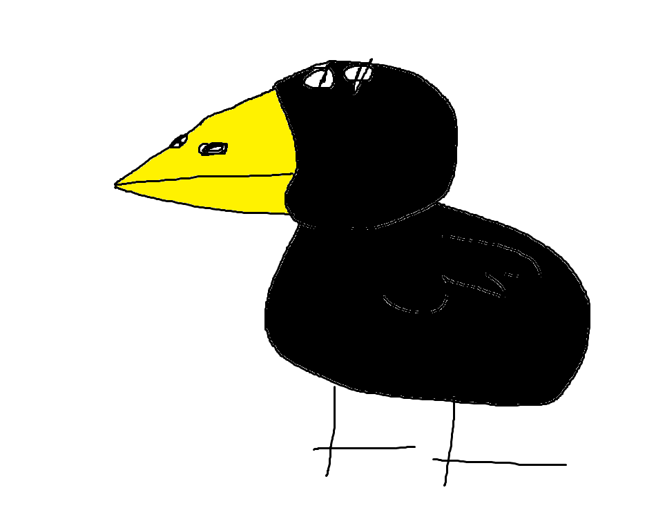

Vilain est le Canard Ténèbre. Il est de type Attaque, mais faites très attention quand il est sous l'effet de Colère Noire!
Compétences :
Comp. 1 : Charge! : Fonce sur un ennemis avec 25% de chances de l'assomer.
Comp. 2 : Inflige de gros dégâts sur un ennemis. Tour de temps de pause : 3 tours.
Comp. 3 : Colère Noire : Se met dans une colère noir pendant 3 tours. Quand tu es dans l'effet de colère noire, tes attaques infligent 50% de dégâts en plus. Tour de temps de pause : 5 tours.
